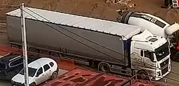
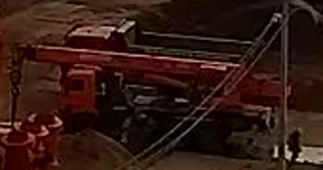

Кампус в Перми · корпус 1смена 08:00–20:00 · сейчас 13:52
СменаНеделяМесяц
Простой техники за смену оценка, не к оплате
≈ 17 500 ₽
2 ч 40 мин без работы у 4 машин · ставка 6 500 ₽/ч — ваша, из настроек
Почему стояли — отметки прораба
Нет фронта работ1 ч 05
Ждём материал0 ч 55
Поломка0
Причина не отмечена0 ч 40
Работа техники9 ч 00машино-часов · 7 машин
Загрузка62 %работа от времени на площадке
Проездов148 въездов · 6 выездов
Без ответа2 вопросав рапорт не идут, пока не ответят
Камеры2 из 3Кам 6 — нет кадра с 13:50
Загрузка по машинам
работаетедетстоитне видно
Машина · чейСмена 08–20, сейчас 13:52РаботаПростой
Погрузчик 4своя
3 ч 501 ч 05

Фура 1подрядчик
0 ч 100 ч 55

Манипулятор 9аренда
4 ч 050 ч 20
Бортовой 6чей — не указан
0 ч 300 ч 20
Бетоновоз 3подрядчик
0 ч 250
Прототип В · смена руководителя. Главное — деньги и загрузка, видео — доказательство (клип у каждого простоя), а не центр экрана. Раскладка — как отчёты загрузки техники Trackunit, Tenna, CAT VisionLink: цифра потерь, причины, полоса смены по машине, рапорт. Метки 2…9 — номера задач КП. Кадры — камеры кампуса 22.10; часы, рубли и причины — пример. Скрыть метки